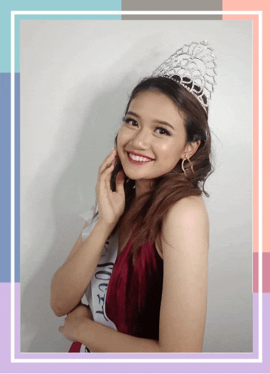
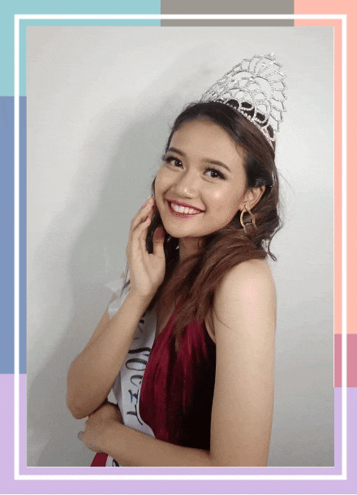

HOLA! I am Cheska Janine Odango but you can call me Cheska for short. I'm born on June 3, 2000 and yes! I am 20 years old stunning. I Graduated my Senior Highschool in Sta. Clara Parish School in Pasay City. Currently, I'am taking my Bachelors Degree in Information Technology at Asia Pacific College. I chose this course because I find IT as an interesting field of learning and growth. Also, it has a wide range of opportunity because as the time goes by technology are getting smarter and advance
I love to join beauty pageants because aside of being a successful developer, I also dreamed to be a Beauty Queen someday. When it comes in my specialization, I used to create a simple mobile application in my Data Structure class. So that I learned some of the basic programming in python and java language. I am interested too in discovering and testing unfamiliar applications for my own satisfaction. I'm inlove with an applications that has good UI and UX, so that I keep them in my smartphone. Also, I love to design graphics and use it as my marketing tool to promote my Online Shop. And yes! it helps me a lot in attracting customers in my social media accounts. Big Thanks to this subject, now I can learn more in in terms of creating a good UI and UX. And I will apply all my learnings in this subject to my future projects and Application Development.